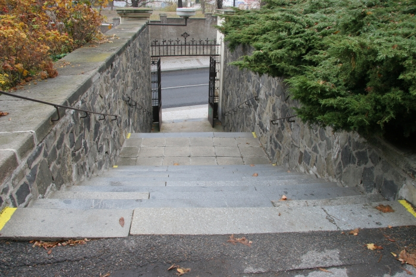

<?php
	$tabulka = true;

	require ('_include/php/zaklad.php');

	titulek ('Beuronské umìní - opatství sv. Gabriela');

	menu ('Jít na autobus','gabriel-autobus-01.html');
	menu ('Prohlédnout si kostel z dálky','gabriel-panorama.html');
	menu ('Jít doprava','gabriel-levo-01.html');
	menu ('Jít doleva','gabriel-pravo-01.html');
	menu ('Otoèit se','gabriel-rozcesti.html');

	zahlavi ();
?>




<?php
  zapati ();
?>
